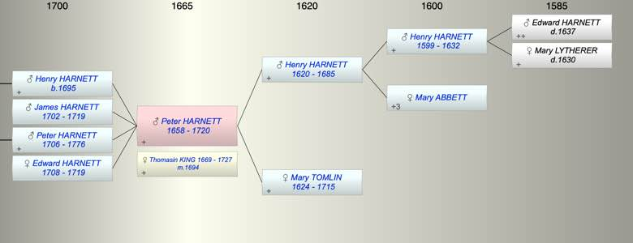

| [Index] |
| Peter HARNETT (1658 - 1720) |
|  |
| b. 1658 at St Laurence |
| m. 13 Sep 1694 Thomasin KING (1669 - 1727) at Westbere, Kent |
| d. 1720 aged 62 |
| Parents: |
| Henry HARNETT (1620 - 1685) |
| Mary TOMLIN (1624 - 1715) |
| Siblings (4): |
| Edward HARNETT (1643 - ) |
| Mary HARNETT (1646 - ) |
| Ann HARNETT (1649 - ) |
| Thomas HARNETT (1653 - 1678) |
| Children (4): |
| Henry HARNETT (1695 - ) |
| James HARNETT (1702 - 1719) |
| Peter HARNETT (1706 - 1776) |
| Edward HARNETT (1708 - 1719) |
| Events in Peter HARNETT (1658 - 1720)'s life | |||||
| Date | Age | Event | Place | Notes | Src |
| 1658 | Peter HARNETT was born | St Laurence | Note 1 | ||
| 09 May 1685 | 27 | Death of father Henry HARNETT (aged 65) | St Lawrence | Note 2 | |
| 13 Sep 1694 | 36 | Married Thomasin KING (aged 25) | Westbere, Kent | by licence 7 Sep 1694 | |
| 1695 | 37 | Birth of son Henry HARNETT | St Laurence | bap 26 Sep 1695 ex FMP PR | |
| 1702 | 44 | Birth of son James HARNETT | St Laurence | bap 26 May 1702 ex FS | |
| 1706 | 48 | Birth of son Peter HARNETT | St Laurence | ||
| 1708 | 50 | Birth of daughter Edward HARNETT | St Laurence | bap 29 Apr 1708 ex FS | |
| 03 Jan 1715 | 57 | Death of mother Mary TOMLIN (aged 91) | St Laurence | Note 3 | |
| 1719 | 61 | Death of son James HARNETT (aged 17) | St Laurence | Note 4 | |
| 1719 | 61 | Death of daughter Edward HARNETT (aged 11) | St Laurence | Note 5 | |
| 1720 | 62 | Peter HARNETT died | |||
| Personal Notes: |
|
Did Thomasin Harnett widow marry William Peake bo St L at Minster 4 May 1727
There is an inventory no will? |
| Created on a Mac™ using iFamily for Mac™ on 8 Oct 2023 |